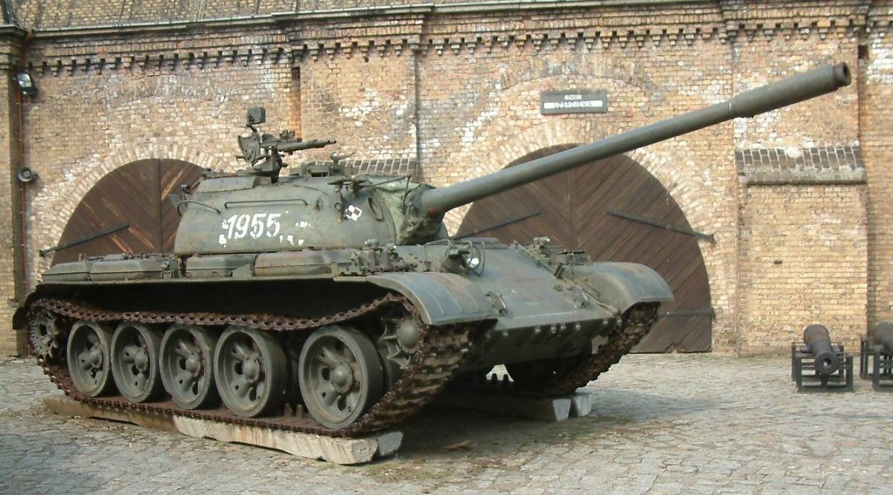

T-55
Informacije o vozilu:
| Specifikacija | Detalji |
|---|---|
| Naziv | T-55 |
| Tip | Srednji tenk (40.5 tona) |
| Uveden u uporabu | 1949. godine |
| Naoružanje | top 100 mm D10 i 2 × 7,62 mm strojnice DT |
| Oklop | 203 mm |
| Brzina | 50 km/h |
| Posada | 4 člana |
Razvoj prvog prototipa T-54 tenka počeo je u listopadu 1944. godine u OKB-520 dizajn birou u Staljin Ural Tenk Tvornici No. 183 (Uralvagonzavod) koja se nalazi u Nižnji Tagilu. Dizajn je dovršen u prosincu iste godine, dok je prvi prototip napravljen u veljači 1945. godine. Testiranja koja su se provodila u ožujku i travnju 1945. uspješno su bila provedena i Crvena armija je prihvatila tenk pod nazivom T-54. Tenk je imao gotovo isto podvozje i tijelo kao i T-44. Glavna razlika je u tome što je pojačan oklop na prednjem dijelu tijela (120 mm gornja ploča i 90 mm donja ploča) i novi dizajn otvora za vozača. Kupola je veća i ima debeli oklop (180 mm sprijeda, između 90 mm i 150 mm na stranama i 30 mm na krovu).
Prvi model tenka T-55 iz 1947. godine